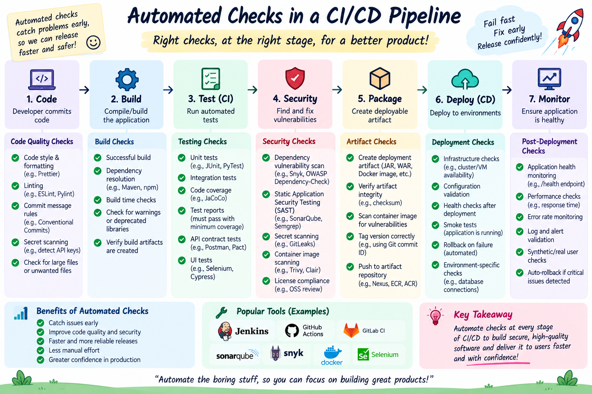

Right checks, at the right stage, for a better product! Discover how modern software pipelines catch bugs early, eliminate manual testing bottlenecks, and enforce automated quality gates from code commit to live monitoring.
~ "Fail fast, Fix early, Release confidently!" 🚀
🗺️ Master Architecture Visualizer: Automated Checks in CI/CD
The end-to-end 7-stage software quality pipeline: from developer commit to post-deployment monitoring.

🔍
1. The 7 Stages of Automated SDLC Pipeline Checks
Every modern CI/CD pipeline executes specific automated checks at each progressive stage of the release lifecycle:
One-Time Setup vs Continuous Protection ("Write Once, Enforce Forever!")
Configuring these 7 automated checks is a one-time setup task (writing the pipeline configuration script .github/workflows/ci.yml and branch protection rules). Once setup:
• Developers simply git push—the CI/CD pipeline runs all 7 check stages automatically!
• No repetitive manual testing effort is required for every single release.
💡
2. Key Benefits & Industry Tooling
📊 Benefits of Automated Checks
Catch issues early: Fix bugs when they are cheap and easy to solve.